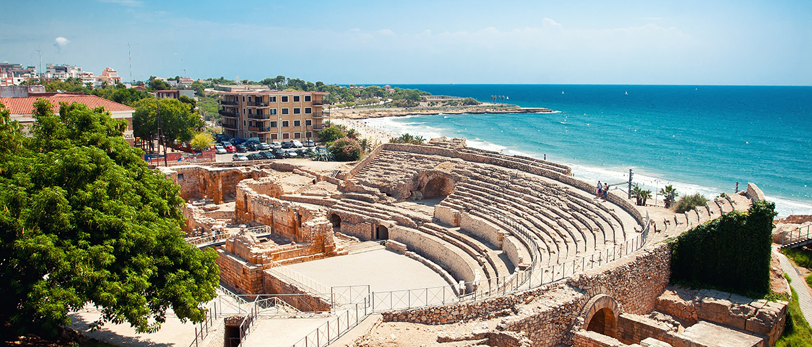
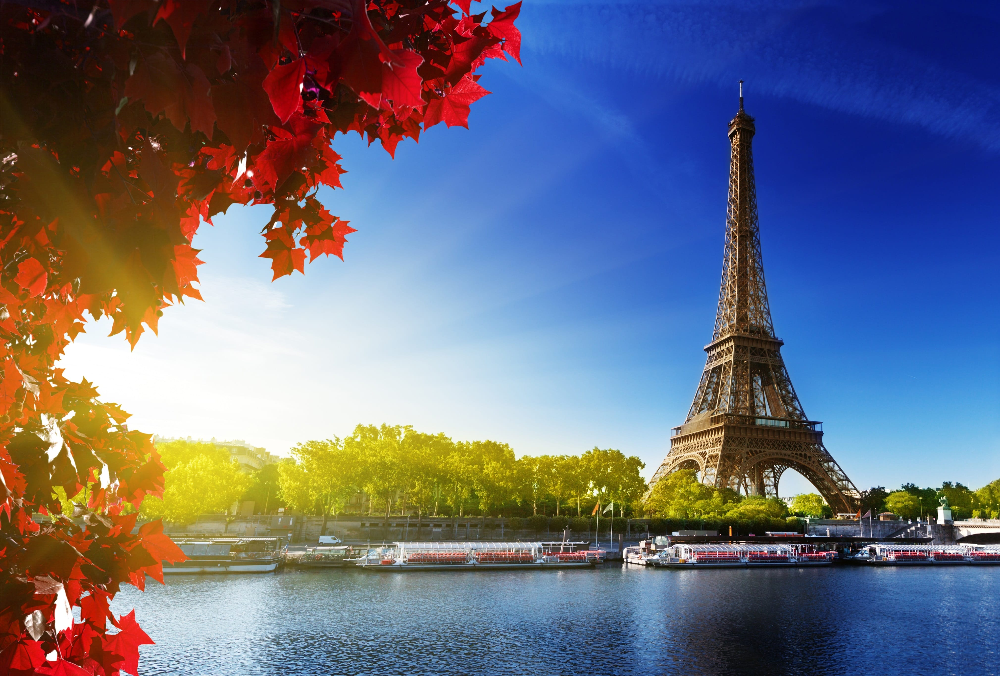
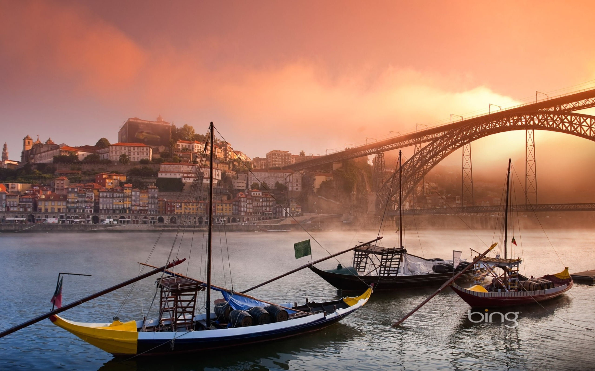

My Travels
Spain
- I've been to Spain a couple of times when I was younger.The first time we stayed in a place called Tarragona,a port city located in northeast Spain on the Costa Daurada by the Mediterranean Sea.There was a lot of historical monuments,including Circ Romà Ruins of a Roman chariot track, Tarragona Amphitheatre,National Archaeological Museum of Tarragona and Balcó del Mediterrani.The beaches there were also beautiful,along with the weather. 
- I also went to Barcelona.We visited all the shops and of course the famous football stadium Camp Nou.We watched a match there too between Barcelona and Real Madrid.I got to see my favourite player Ronaldo play.
- I visited France a few times throughout my lifetime.I've an unlce who lives there so it was handy for somewhere to stay.It's a nice Country and there is lovely pastries to eat. We visited Paris aswel.We went to see the eiffel tower.I was awestruck by the sightings.We also walked down the Champs-Elysees,which was beautiful.There were many other things we saw such as Louvre Museum,Arc de Triomphe,Sacre-Coeur and Montmartre. 
- I went to Portugal twice in my life.The first time we went and stayed in the Algarve. It was a beautiful place and the people there were very nice.The weather was also amazing. We went to the pool or beach everyday.The second time we stayed in the Porto. Porto is a coastal city in northwest Portugal known for its stately bridges and port wine production. In the medieval district, narrow cobbled streets houses and cafes. Sao Francisco Church is known for its amazing interior with gilded carvings. 
France
Portugal